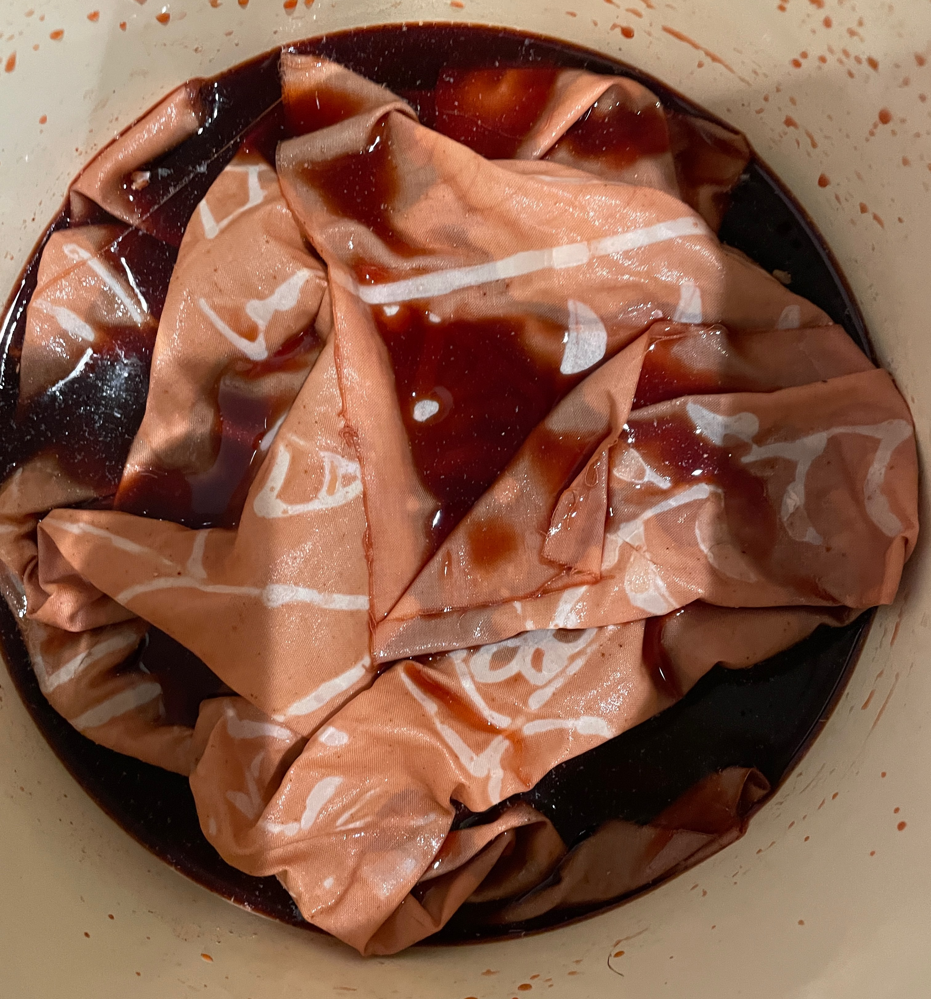
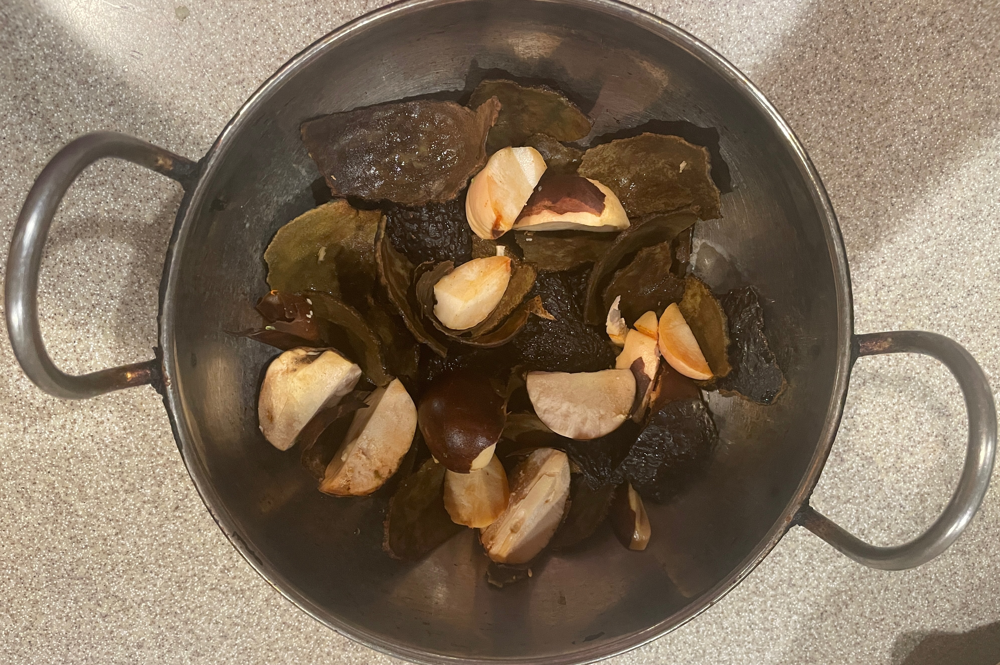
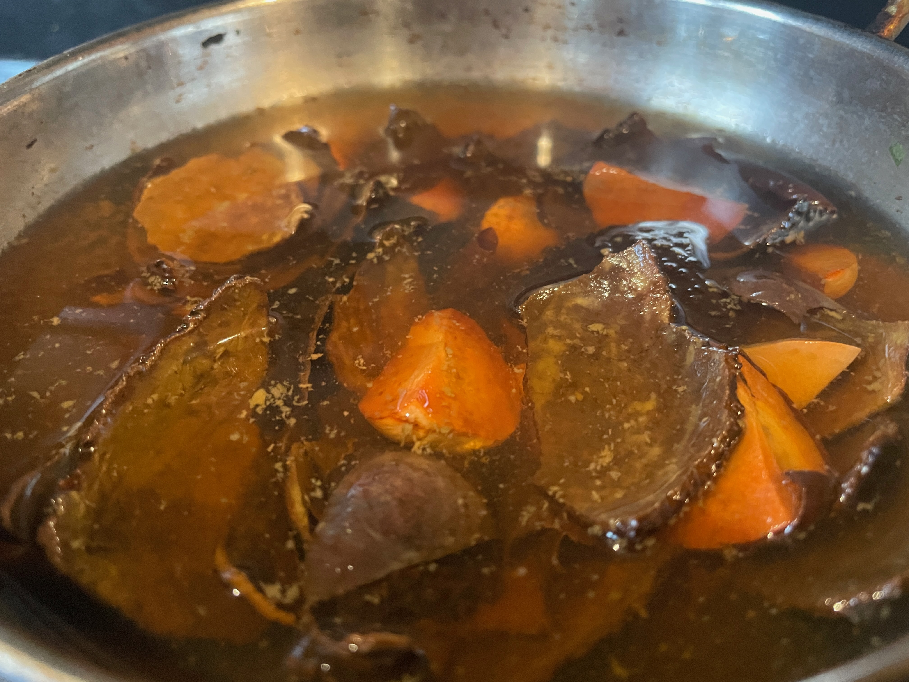
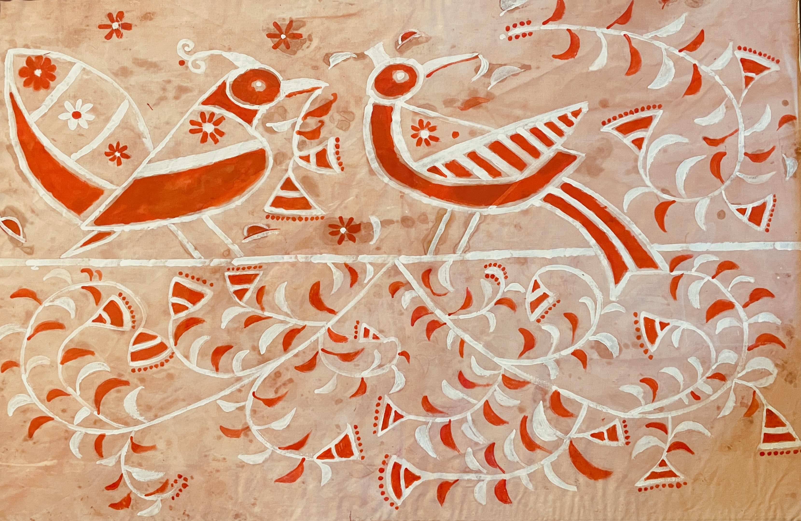
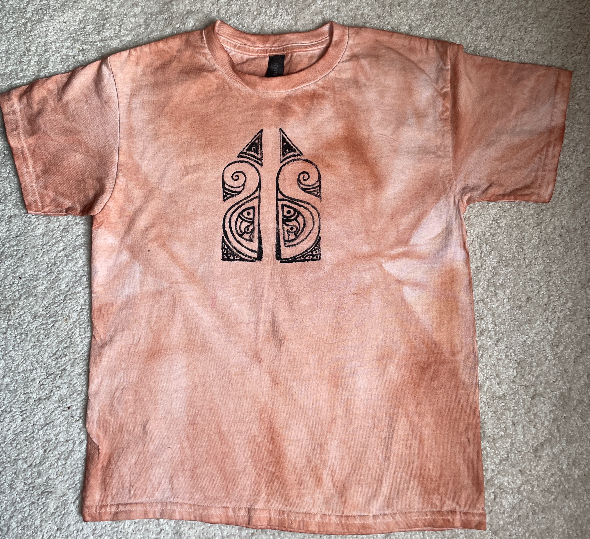

How to make avocado dye

To make a beautiful peach color from avocado skins and pits, follow the recipe below:
Step 1: Prepare Avocado Skins and Pits
Save up about 5-6 avocado skins and pits for dyeing 1 yd of cloth.
You can freeze them in a bag and use them when needed.
Wash the pits and skins thoroughly to remove all the remnants of the fruit residue.
The color actually depends on the level of cleanliness of the skin.

Step 2: Make the Dye Bath
Roughly chop the skins and pits in your pot as shown in the picture above.
Add enough water to cover them by about 2-3 inches. Simmer gently for 45-60 mins.
Turn off the heat and let it steep for a few hours or overnight for a richer tone.
Strain out solids using a fine sieve or cloth.

Step 3: Color Variations
If you add vinegar water (ratio 1:4) the color becomes a darker peach.
Baking soda (1 tsp per cup) makes the color shift to a coral pink.
Please share with me the colors you obtain if you try this out. I'd love to see new shades.
Here are some fabric artworks I made after dyeing a white cloth and a T-shirt with avocado dye.
The designs are inspired by Mr. Sudhiranjan Mukherjee from Santiniketan, India.

